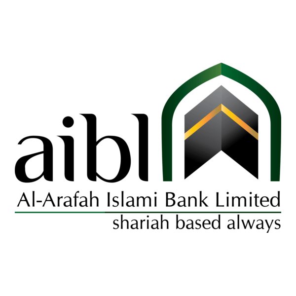
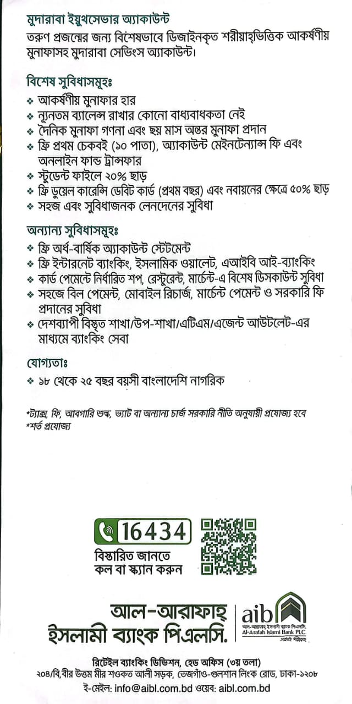
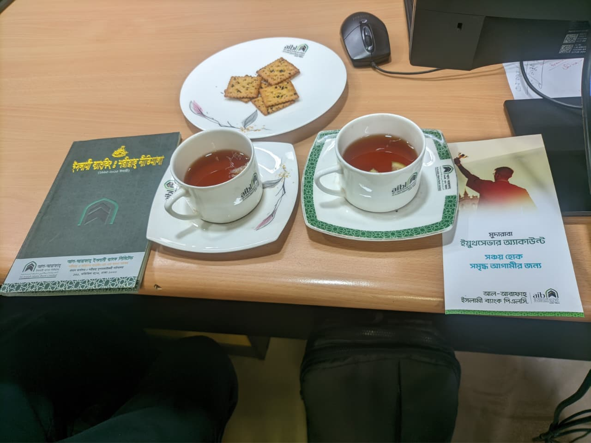
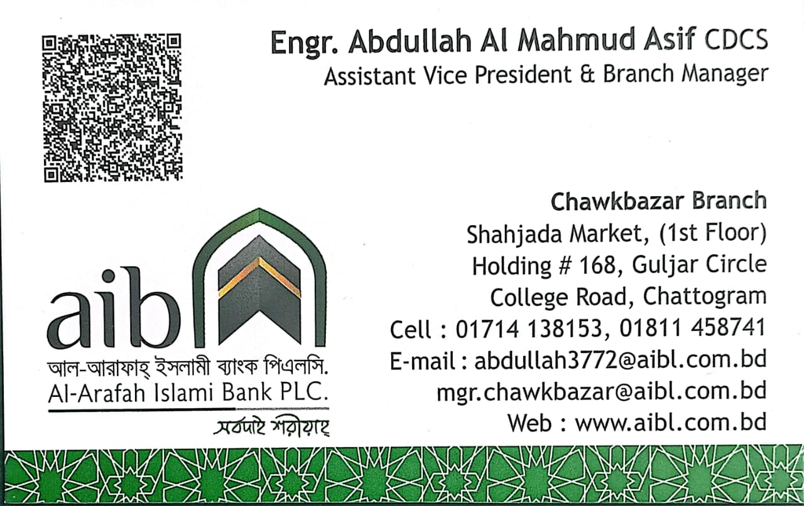
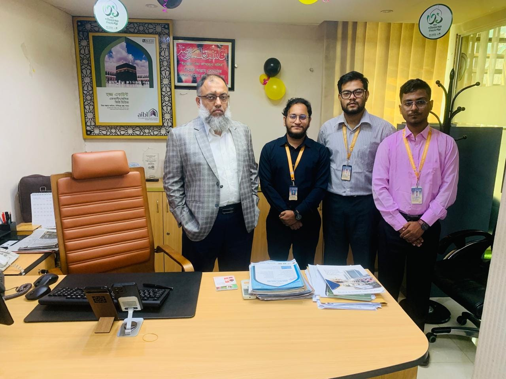
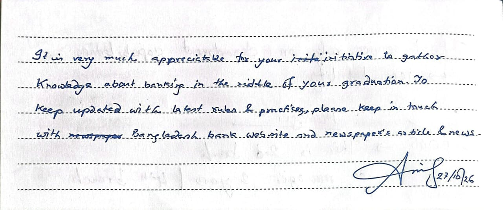

Branch Established
August 2016
Operational timeline at the Chowkbazar branch location as reported during the visit.

A Practical Study of Banking Operations, Customer Experience & Credit Risk
Physical footprint, staffing strength, and operational configuration observed at Al-Arafah Islami Bank PLC, Chowkbazar Branch.
Operational timeline at the Chowkbazar branch location as reported during the visit.
Two-level branch premises housing customer counters, service desks, and management offices.
Approximate interior area reported during our academic tour of the premises.
Total branch personnel across front-desk, general banking, cash, and investment desks.
Dedicated security staff stationed for physical premise and vault/ATM safety.
On-site automated teller terminals supporting customer cash withdrawals and card services.
Decentralized banking system, as reported during the visit.
| Operational Indicator | Field-Visit Observation | Evidentiary Basis |
|---|---|---|
| Established | August 2016 | Reported during branch briefing |
| Floors | 2 | Direct observation & briefing |
| Approximate Floor Area | 3,750 sq. ft. | Reported during branch briefing |
| Employees | 19 | Reported during branch briefing |
| Security Personnel | 5 | Observed & reported during visit |
| ATM Booths | 2 | Observed & reported during visit |
| Banking System | Decentralized banking system, as reported during the visit | Reported during branch conversation |
Products and services discussed during the visit and documented via supplied branch brochures.
| Product / Service | Target Segment | Observed / Discussed Highlights | Verification & Documentation Status |
|---|---|---|---|
| Dual-Currency Services | Residents & Non-Residents | Discussed as available for both resident and non-resident account/card holders. Additionally, the supplied Mudaraba Youth Saver brochure documents a free Dual-Currency Debit Card for the first year (with a 50% renewal fee discount). | Discussed during visit & partially documented on Youth Saver brochure; subject to Bangladesh Bank foreign exchange rules. |
| An-Nisa | Women-Focused Banking Segment | Presented during the visit as a women-focused banking service. Field visit notes mention a 4–5% figure in connection with An-Nisa; however, its exact meaning and applicability (whether a weightage, promotional parameter, or provisional figure) are unverified. | Requires Verification: Exact product classification, eligibility rules, and the meaning of the 4–5% note must not be treated as an established profit or interest rate without official bank confirmation. |
| Entrepreneur Financing | Small & Emerging Entrepreneurs | Financing support discussed for business and entrepreneurial initiatives operating under Shariah-compliant investment modes. | Discussed during visit; subject to applicable bank eligibility criteria, trade licensing, and credit appraisal. |
| Mudaraba Youth Saver Account (মুদারাবা ইয়ুথসেভার অ্যাকাউন্ট) |
Youth & University Students (Bangladeshi citizens aged 18–25) | Shariah-based Mudaraba savings account designed for the young generation: no minimum balance requirement, daily profit calculation with six-monthly payout, free first 10-leaf cheque book, free account maintenance & online fund transfer, 20% discount on Student File, free 1st-year Dual-Currency Debit Card (50% off renewal), and free AIB i-Banking / Islamic Wallet. | Verified via Supplied Brochure: Directly supported by the two supplied brochure photographs below. |
Brochure Cover (Supplied Asset 1): “মুদারাবা ইয়ুথসেভার অ্যাকাউন্ট — সঞ্চয় হোক সমৃদ্ধ আগামীর জন্য” (Mudaraba Youth Saver Account: Let savings be for a prosperous future).

Brochure Features & Eligibility (Supplied Asset 2): Lists special features (no minimum balance, daily profit calculation, 20% Student File discount, dual-currency card) and eligibility (ages 18–25).
Observed customer footfall patterns, queue positioning, and service environment during our branch visit.
Approximate regular customer volume per working day reported during the visit.
First and last working days of the Bangladesh banking week experience peak customer traffic.
Approximate daily customer count reported on busier days (Sunday and Thursday).
Two customer queues were observed, including one positioned toward a corner that appeared insufficiently convenient.
Observation: Service speed varied across departments during the visit.
Routine counter inquiries and cash transactions moved at a different pace compared to documentation-intensive general banking and investment desks.
Observation: The observed queue arrangement may benefit from improved accessibility and visibility.
Of the two queues observed, one was positioned toward a corner that appeared insufficiently convenient for approaching customers. Clearer floor signage or queue realignment could enhance flow.
Observation: Seating capacity and arrangement may warrant review.
Seating arrangements appeared inadequate for the observed customer volume-particularly considering peak days when footfall reaches 130–150 visitors.
Sequential breakdown of a real-world property development financing inquiry discussed during our branch visit.
Equivalent to BDT 100 Lakh. A customer reportedly approached the branch manager seeking financing of BDT 1 crore.
Development of an existing property. The customer was described as owning land with an existing three- to four-storey building.
The discussion reportedly included original land documents in connection with mortgage-related security.
Reportedly mentioned as the highest range discussed in that particular conversation.
Difference between the customer's requested amount (BDT 1 crore / 100 lakh) and the figure discussed (BDT 40 lakh).
This sequence illustrates a reported educational case discussion shared during our academic visit. It is not a confirmed loan approval, formal rejection, or universal branch lending ceiling.
No final credit decision by the bank is inferred, and no customer-identifying information was disclosed or recorded.
In practical banking, a customer's requested financing amount is evaluated against multiple risk and regulatory safeguards:
Observations on internship opportunities, employee support, teamwork, and workplace identification practices.
Five interns were reportedly present at the branch during the visit, indicating active practical learning exposure for university students transitioning into banking careers.
Leave Facilities: Employee leave provisions were discussed or noted during the visit session.
Compensation Impression (Qualified): The visiting student group reported a generally satisfactory impression of the salary structure based on conversation; however, this is an informal impression and not an independently verified compensation assessment.
Collaborative Coverage: Employees appeared willing to share responsibilities during emergencies or high-pressure periods so that essential desk operations continue without disruption.
Demonstrates informal peer coordination within a 19-person branch team.
Visual Identification Observations:
Noted neutrally as an observation during the visit timeframe rather than a generalization about bank-wide policy.
Structured internship supervision and planned leave administration help develop future bankers while preserving daily staffing ratios.
Cross-training officers to share duties during emergencies ensures uninterrupted customer service at critical counters.
Visible ID lanyards and desk nameplates strengthen customer confidence, accountability, and ease of communication for first-time visitors.
Small gestures that make a professional visit welcoming.

Field-Visit Refreshments (`assets/hospitality-tea-1.jpg`): Tea served in official aibl-crested cups and saucers with biscuits, placed alongside the bank's Islami Banking: Shariah Principles book and Mudaraba Youth Saver Account brochure during our session.
“We appreciated the hospitality and refreshments offered during our academic visit to Al-Arafah Islami Bank PLC, Chowkbazar Branch. These thoughtful gestures helped create a welcoming atmosphere for our interaction and learning experience.”
In relationship-driven service organizations such as banks, professional courtesy and attentive hosting contribute to a positive visitor experience, foster open dialogue and relationship-building, and shape constructive perceptions of organizational culture.
Contextual Qualification: The photograph and reflections above illustrate the hospitality extended to our student group during this particular academic visit; they are presented as an appreciative record of our visit experience rather than proof of overall customer satisfaction or formal bank-wide service standards.
Understanding why Non-Performing Loans represent a primary challenge identified during our branch visit.
During our field discussion, managing Non-Performing Loans (classified investments/loans) was highlighted as a major challenge in banking. No branch-specific NPL ratio, default figure, or internal recovery metric was disclosed or invented here; the cards below pair that visit observation with established banking risk principles.
In banking practice, a Non-Performing Loan (NPL) (or classified investment in Islamic banking) refers to a credit or financing facility in which the borrower has failed to pay scheduled principal installments or profit/interest obligations for a specified regulatory period (commonly 90 days or more, subject to central bank classification guidelines such as Substandard, Doubtful, and Bad/Loss categories).
Banks operate as financial intermediaries using depositors' funds. When loans or investments cease performing, the bank not only loses expected return streams but must also set aside capital reserves (loan-loss provisions) from its operating income to absorb potential write-offs—directly testing institutional resilience and depositor confidence.
Official branch leadership credentials and group documentation from our visit to Chowkbazar Branch.

Branch Manager's Visiting Card (`assets/manager-card.jpg`): Official business card supplied during the visit.
| Field | Verified Detail (Supplied & Legible on Card) |
|---|---|
| Name | Engr. Abdullah Al Mahmud Asif |
| Qualification / Designation Detail | CDCS |
| Position | Assistant Vice President & Branch Manager |
| Branch | Chowkbazar Branch (printed as Chawkbazar Branch on card) |
| Bank | Al-Arafah Islami Bank PLC (আল-আরাফাহ্ ইসলামী ব্যাংক পিএলসি.) |
| Branch Address (Legible on Card) | Shahjada Market, (1st Floor), Holding # 168, Guljar Circle, College Road, Chattogram |

Field-Visit Group Photograph (`assets/group-photo.jpg`): BBA Batch 32 student representatives (Port City International University) with Branch Manager Engr. Abdullah Al Mahmud Asif (CDCS) in his office at Al-Arafah Islami Bank PLC, Chowkbazar Branch.
Part A: Verbatim transcription of the Branch Manager's handwritten note • Part B: Banking terms identified for further study.

Original Handwritten Note (`assets/manager-note.jpg`): Written and signed on 27/10/26 during our branch visit.
“It is very much appreciatable for your initiative to gather Knowledge about banking in the middle of your graduation. To keep updated with latest rules & practices, please keep in touch with Bangladesh bank website and newspaper's article & news.”
Signature & Date on Note: Signed Asif, dated 27/10/26.
Editorial Fidelity Note: Transcribed strictly from the legible handwriting without rewriting. In line 1, a brief false start (inita) is crossed out by the writer before “initiative”; in line 4, the word newspaper is crossed out before “Bangladesh bank website”.
Explanation: Formal written or electronic communication exchanged between a bank and its customers, other banks, or regulatory authorities (e.g., official letters, notices, sanction letters, and circulars).
Practical Example: Issuing an official financing sanction letter or collateral documentation notice to a client.
Explanation: Commonly stands for Secured Overdraft in the Bangladesh banking context—a credit facility secured against liquid financial collateral (such as term deposits or savings instruments) or work orders. Exact product structure and Shariah mode depend on the bank.
Practical Example: A business drawing short-term working funds against a pledged Mudaraba term deposit receipt.
Explanation: In the property collateral context, Land-Record Mutation (Namjari) is the official legal updating of government land revenue records (Khatian) to register the current owner's name after a transfer or inheritance.
Practical Example: Verifying an updated mutation khatian alongside original title deeds before accepting land as mortgage security.
Status — Confirmation Required: Recorded in the student field-visit notes. Because the exact expansion of the acronym “CAV” in this branch's operational context is not confirmed in the supplied materials, no expansion is guessed here.
Next Step: Requires confirmation from the Chowkbazar Branch officers or course instructor.
Status — Confirmation Required: In Bangladesh banking, STD commonly refers to a Short Term Deposit account (or Special Notice Deposit / SND), though it can carry other meanings depending on context.
Next Step: Marked for confirmation against the branch's specific Shariah account terminology and course notes.
“These terms were identified during our field visit as topics for further learning. Their precise meaning and application should be confirmed against the bank's terminology and relevant course materials.”
Official contact details verified directly from the supplied bank materials and closing appreciation from BBA Batch 32.
Branch Contact Source (`assets/manager-card.jpg`): Displays branch phone numbers, manager emails, and official website.

Corporate Contact Source (`assets/bank-contact.jpg`): Footer of supplied brochure displaying helpline 16434, info@aibl.com.bd, and aibl.com.bd.
| 24/7 Call Center / Helpline | 16434 (from supplied brochure) |
| Branch Cell Numbers | 01714 138153, 01811 458741 (from supplied visiting card) |
| Official Website |
www.aibl.com.bd /
aibl.com.bd
Offline Presentation Note: While this presentation operates 100% offline, opening the external website link requires an active internet connection.
|
| Official Email Addresses |
info@aibl.com.bd (Corporate / Brochure)mgr.chawkbazar@aibl.com.bd (Branch Manager Card)abdullah3772@aibl.com.bd (Manager Direct Card)
|
| Branch Location | Chawkbazar Branch, Shahjada Market (1st Floor), Holding # 168, Guljar Circle, College Road, Chattogram |
| Head Office (Brochure Footer) | Retail Banking Division, Head Office (3rd Floor), 204/B, Bir Uttam Mir Shawkat Ali Sarak, Tejgaon-Gulshan Link Road, Dhaka-1208 |
“Thank you to Al-Arafah Islami Bank PLC, Chowkbazar Branch, for welcoming our academic group and providing an opportunity to observe banking practices beyond the classroom.”